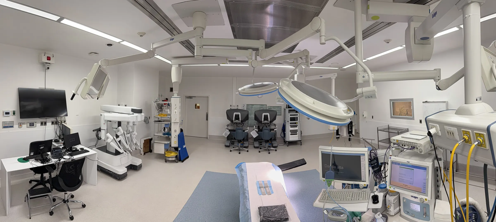

Cirugía Torácica: ¿Qué hacemos y cómo te podemos ayudar?
La especialidad
¿Qué es la cirugía de tórax o cirugía torácica?
- Campo
- Órganos de la cavidad torácica, salvo corazón y grandes vasos
- Técnicas
- VATS · RATS · broncoscopía intervencionista · cirugía abierta
Cirugía de tórax y cirugía torácica son dos nombres para la misma especialidad quirúrgica.
Un cirujano torácico es el subespecialista que realiza procedimientos quirúrgicos sobre todos los órganos contenidos en la cavidad torácica, con excepción del corazón y los grandes vasos.
Lo que distingue a los cirujanos torácicos modernos es su dominio tanto de la cirugía tradicional como de las técnicas mínimamente invasivas de vanguardia: videotoracoscopía (VATS), cirugía robótica (RATS) y broncoscopía intervencionista avanzada.
Enfermedades que tratamos
Tratamos una amplia gama de enfermedades que afectan la función pulmonar y las estructuras del tórax.
Patología Pulmonar
Cáncer, nódulos y enfisema
- Cáncer pulmonar — lobectomía, segmentectomía, neumonectomía
- Nódulo pulmonar solitario — estudio, biopsia y resección
- Metástasis pulmonares
- Enfisema bulloso — bullectomía
- Quistes pulmonares y absceso complicado
Patología Pleural
Neumotórax, derrame y empiema
- Neumotórax espontáneo primario y secundario
- Derrame pleural — diagnóstico y pleurodesis
- Empiema pleural — drenaje y decorticación por VATS
- Mesotelioma pleural
- Biopsia pleural
Patología Mediastínica
Timoma, quistes y estadificación
- Timoma — timectomía por VATS o robótica
- Quistes mediastínicos
- Tumores neurogénicos
- Estadificación ganglionar — mediastinoscopia, EBUS
Pared Torácica y Esófago
Pectus, tumores y esofagectomía
- Pectus excavatum — operación de Nuss
- Tumores de pared torácica
- Cáncer de esófago — esofagectomía robótica
Hiperhidrosis
Sudoración excesiva y rubor facial
- Hiperhidrosis palmar, axilar y plantar
- Simpatectomía torácica por VATS
- Rubor facial patológico (eritrofobia)
Broncoscopía Intervencionista
Diagnóstico e intervención sin incisión
- EBUS: estadificación y biopsia ganglionar mediastínica
- CryoEBUS: biopsia criogénica, pionero en Latinoamérica
- Broncoscopía rígida: manejo de obstrucción central y stents
- Crioterapia endobronquial: destrucción de tumores endobronquiales
- Láser y electrocauterio endobronquial
- Diagnóstico y tratamiento broncoscópico avanzado
Opérculo Torácico
Primera costilla y escalenos
- Resección robótica de primera costilla
- Escalenectomía / descompresión neurovascular
Cirugía Abierta
Toracotomía y esternotomía para casos de alta complejidad. Acceso directo y amplio al tórax.
Catálogo
Cirugía Torácica: Procedimientos
Resecciones pulmonares oncológicas
- Resección en cuña (wedge resection)
- Segmentectomía anatómica
- Lobectomía
- Bilobectomía
- Neumonectomía
- Lobectomía con manguito (sleeve lobectomy)
Resecciones pulmonares no oncológicas
- Bullectomía / cirugía de reducción de volumen pulmonar (LVRS)
- Biopsia pulmonar quirúrgica
- Resección de secuestro pulmonar / MAQ
Procedimientos pleurales
- Pleurodesis mecánica/química (talco)
- Decorticación pleural / Pleurectomía
- Biopsia pleural
- Drenaje de empiema/hemotórax retenido
Procedimientos mediastínicos
- Timectomía
- Resección de masas/quistes mediastínicos
- Disección/estadificación ganglionar mediastínica
- Biopsia de masas mediastínicas
Procedimientos esofágicos
- Tiempo torácico de esofagectomía (Ivor Lewis / McKeown)
- Enucleación de leiomioma esofágico
- Diverticulectomía esofágica
Procedimientos diafragmáticos
- Plicatura diafragmática
- Reparación de hernia diafragmática
- Resección/reconstrucción diafragmática
Trauma y urgencias
- Drenaje y aseo de hemotórax retenido
- Manejo de lesiones penetrantes torácicas
- Manejo del Neumotórax (Espontáneo o Traumático)
- Estabilización quirúrgica de fracturas costales
Pared torácica y opérculo torácico
- Resección de tumores de pared torácica
- Resección robótica de primera costilla
- Escalenectomía / descompresión neurovascular
Trasplante
- Trasplante Monopulmonar
- Trasplante Bipulmonar
Sistema nervioso simpático y pericardio
- Simpatectomía torácica
- Ventana pericárdica
- Pericardiectomía
Vía aérea y conducto torácico
- Resección traqueal/bronquial asistida
- Ligadura del conducto torácico
FAQ
Preguntas frecuentes
¿Qué es la cirugía torácica?
Es la especialidad quirúrgica dedicada a las enfermedades del tórax: pulmón, pleura, mediastino, tráquea, pared torácica y esófago. Abarca desde la biopsia de un nódulo hasta la resección de un cáncer pulmonar, el manejo del neumotórax, los tumores del mediastino y el trasplante pulmonar.
¿Es lo mismo que cirugía cardíaca o cardiotorácica?
No. La cirugía torácica general no opera el corazón ni los grandes vasos; eso corresponde a la cirugía cardíaca. En Chile ambas son especialidades separadas, con formación distinta. El término "cardiotorácico" se usa en otros países donde las dos se ejercen juntas.
¿Qué diferencia hay entre un cirujano de tórax y un broncopulmonar?
El broncopulmonar (neumólogo) diagnostica y trata con medicamentos las enfermedades respiratorias; el cirujano torácico resuelve las que requieren pabellón: extirpar un tumor, tomar una biopsia quirúrgica, drenar la pleura, corregir un neumotórax. Habitualmente trabajan juntos sobre el mismo paciente.
¿Cuándo debo consultar a un cirujano de tórax?
Cuando un examen de imagen muestra un nódulo o masa pulmonar, un tumor en el mediastino o líquido en la pleura; cuando hay sospecha o diagnóstico de cáncer de pulmón; ante neumotórax repetidos; o por sudoración excesiva de manos, axilas o rubor facial que no responde a tratamiento médico.
Me encontraron un nódulo pulmonar en un scanner. ¿Me tengo que operar?
No necesariamente. La mayoría de los nódulos pulmonares son benignos. La conducta depende del tamaño, la densidad, la ubicación y los factores de riesgo del paciente: puede indicarse seguimiento con scanner, un PET-CT, una biopsia por broncoscopía o punción, o cirugía diagnóstica. Un nódulo detectado no equivale a un cáncer.
¿La cirugía de tórax significa que me van a abrir el pecho?
En la mayoría de los casos, no. Hoy el estándar es la cirugía mínimamente invasiva: videotoracoscopía (VATS) o cirugía robótica (RATS), con dos a cuatro incisiones de entre 8 mm y 4 cm. La toracotomía abierta se reserva para tumores extensos o situaciones específicas.
¿Qué son la videotoracoscopía (VATS) y la cirugía robótica (RATS)?
Son dos técnicas mínimamente invasivas. En la VATS se opera con una cámara e instrumentos largos a través de pequeñas incisiones. En la RATS el cirujano maneja brazos robóticos desde una consola, con visión 3D e instrumentos articulados, lo que aporta mayor precisión en la disección de ganglios y en espacios estrechos. Ambas evitan separar las costillas.
¿Necesito una interconsulta para ser evaluado?
No es un requisito. Puedes consultar directamente. Sí ayuda llegar con las imágenes en disco o digital (radiografía, scanner, PET-CT), los informes y cualquier biopsia previa: eso permite resolver la conducta en la primera consulta en vez de citar a una segunda.
¿Tiene sentido pedir una segunda opinión?
Sí, y es una práctica habitual en patología torácica oncológica. Ante un diagnóstico de cáncer, una indicación de cirugía abierta o una recomendación de "solo observar" un nódulo, una segunda opinión especializada puede reforzar o cambiar la conducta. Se puede realizar por telemedicina revisando las imágenes y biopsias existentes.

Primer paso